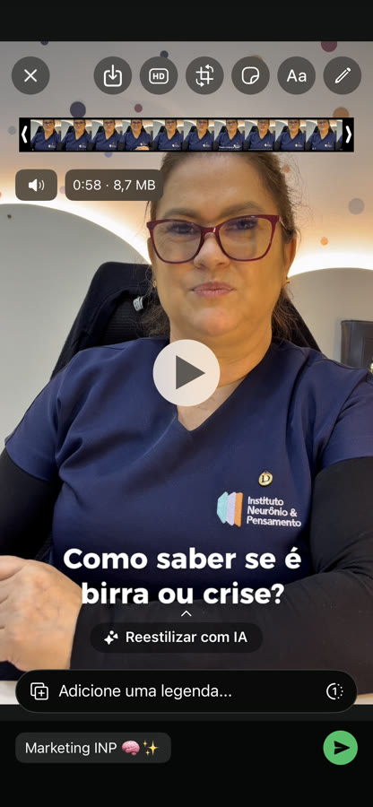
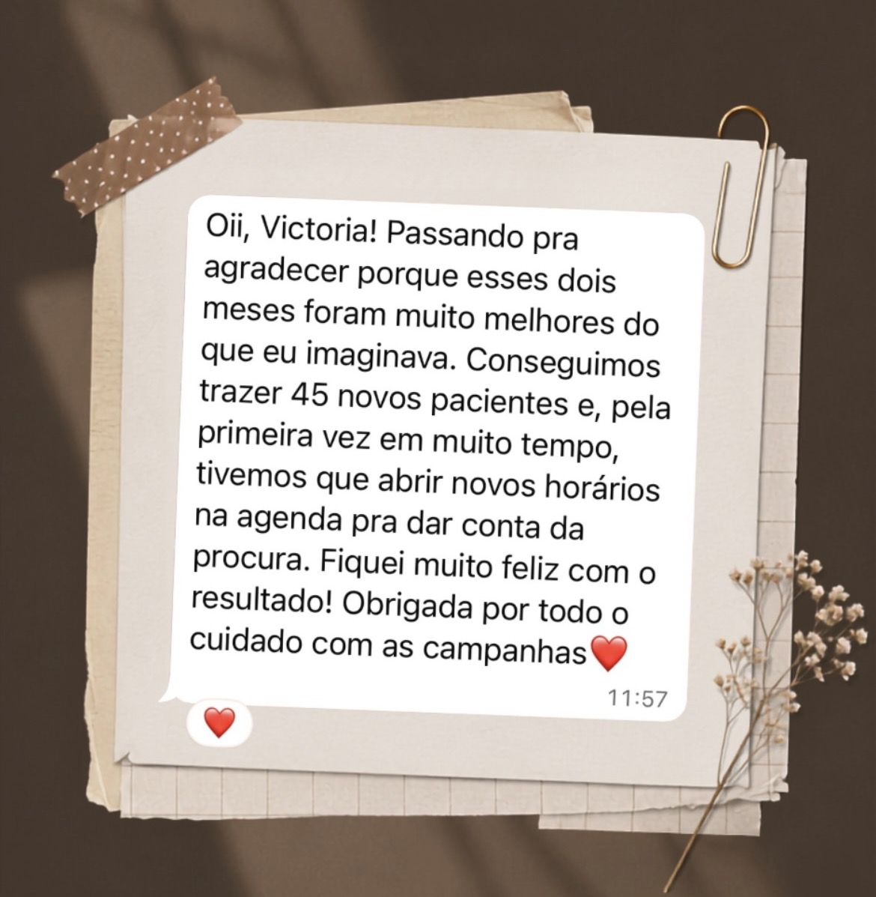

Fisioterapia Obstétrica e Pélvica
Conteúdo estratégico para consultório de fisioterapia obstétrica e pélvica: vídeo educativo sobre massagem perineal e apoio visual para o dia a dia do espaço.
Eu sei o que você pensa
Estratégia, conteúdo e anúncios para negócios que querem crescer de verdade — não só postar todo dia.
@viicksocialmedia (abre o Instagram em nova aba) no Instagram


01 — Sobre
Social media para negócios que querem crescer. Cuido do conteúdo, da estratégia e dos anúncios de marcas e profissionais — mostrando também os bastidores, o marketing e a rotina de quem trabalha PJ nesse mercado.
@viicksocialmedia (abre o Instagram em nova aba) no Instagram
seguidores em 2 meses
Instituto Neurônio & Pensamento
visualizações em
um único reel
novos pacientes
captados em 2 meses
Uma IA não substitui
Estratégia, conteúdo e anúncios exigem alguém que conhece a sua marca — não um algoritmo.
02 — Case em destaque
Clínica de neurociências · Porto Alegre, RS




02.1 — Vídeos
03 — Portfólio


Conteúdo estratégico para consultório de fisioterapia obstétrica e pélvica: vídeo educativo sobre massagem perineal e apoio visual para o dia a dia do espaço.
Reorganização do Instagram de um escritório de advocacia — de um perfil parado a uma presença mais consistente e profissional, com conteúdo em vídeo.
04 — Depoimentos
Vamos conversar?
Disponível para novos projetos de gestão e estratégia de redes sociais.